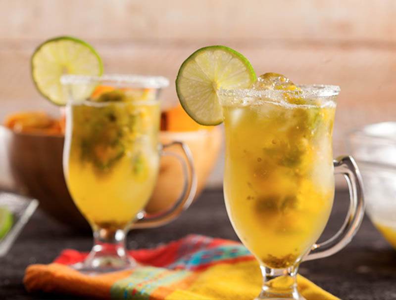

Lulada caleña
27/12/2017, Bogotá La lulada caleña es una bebida refrescante típica de la gastronomía Colombiana, concretamente del Valle del Cauca, y especialmente típica en Cali. Introducción La lulada caleña o lulada valluna tiene una preparación muy sencilla, solo necesitaremos tener una licuadora a mano, y en apenas 10 minutos tendremos lista nuestra lulada, una de las mejores bebidas para calmar la sed en un típico día caluroso caleño. Aunque se puede tomar en cualquier momento del día, sola o acompañando algo de picar o a un plato principal. Si quieren tomarse una bebida típica de Cali, esa es la lulada. Ingredientes ¿Que ingredientes necesitamos para preparar la lulada caleña?
- 500 gramos de lulos
- 8 limones
- Medio litro de agua
- Azucar o panela
- Hielo picado
Juan: Me gusta mucho la comida del Valle
Camilo: Buena receta del Valle
Mateo: Excelente blog de comida del Valle